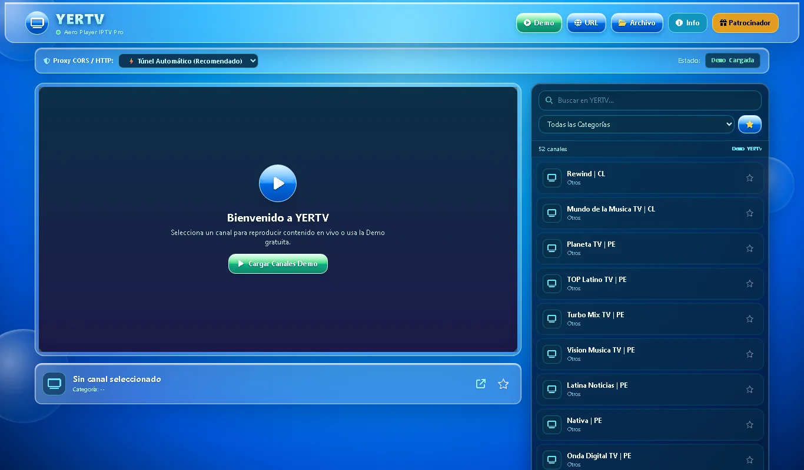

YERTV
Reproductor IPTV en la nube: pegas un enlace .m3u / .m3u8 y ves el canal sin instalar nada, con una interfaz de cristal inspirada en el estilo Frutiger Aero.

El problema
Ver una transmisión en vivo en el celular o la computadora suele implicar instalar una app, aguantar publicidad invasiva o pelear con reproductores que no cargan. Entrevisté a compañeros y usuarios de La Convención y encontré el mismo patrón: quieren inmediatez, no configuración.
Punto de vista: el usuario de streaming necesita un reproductor web directo, sin instalaciones y agradable a la vista, porque las opciones actuales le exigen descargar software o lidiar con interfaces confusas.
La solución
Una WebApp que decodifica el video con HLS.js y lo reproduce en el navegador. Si el navegador no puede con el formato, el sistema ofrece abrir el canal en un reproductor nativo como VLC o MX Player. Todo en una sola página, sin backend propio.
Proxy CORS con cadena de respaldo
Una misma lista puede fallar según el servidor. Implementé tres proxies intercambiables —corsproxy.io, AllOrigins y CodeTabs— más un modo directo, para que el usuario tenga siempre una alternativa cuando un canal no carga.
Navegación con control remoto
La interfaz atrapa el foco dentro de los modales y responde al D-pad, como una app nativa de televisor. Es la misma base que usé para la versión de webOS.
Reproducción en vivo adaptativa
Manejo de estados de carga, errores y reconexión: el reproductor avisa qué está pasando en lugar de quedarse en negro, y guarda los canales favoritos del usuario.
Interfaz Frutiger Aero
Glassmorphism con -webkit-backdrop-filter para que el efecto de vidrio
funcione también en Safari, botones con relieve y animaciones suaves.
Cómo lo construí
Es un proyecto individual: asumí los roles de líder de proyecto, desarrollador full-stack y diseñador. Trabajé con Design Thinking (empatizar, definir, idear, prototipar, evaluar), Lean Canvas y un diagrama de Gantt entre el 20 y el 25 de agosto.
- Decisión técnica: comparé una app Android contra una WebApp y elegí la WebApp por velocidad de uso y cero instalación.
- Reto resuelto: el efecto de vidrio esmerilado no se veía igual en todos los navegadores; lo resolví con el prefijo
-webkit-. - Ajustes tras las pruebas: cambié los colores de la barra de desplazamiento, que no se distinguían, e implementé una barra personalizada.
- Costo del MVP: cero. Herramientas open source, CDNs gratuitos y recursos propios.
Despliegue y versión para TV
La versión web está publicada en Cloudflare Workers, con su propio dominio: no hay servidor que mantener y carga desde el borde de la red, así que abre rápido incluso con mala conexión.
Además empaqueté el reproductor como aplicación nativa para webOS TV,
el sistema de los televisores LG. La app se define con un appinfo.json
(identificador com.yertv.myapp), se empaqueta en un archivo .ipk
y se instala con las herramientas de desarrollo de webOS. Llegué a compilar dos versiones,
la 0.1.0 y la 0.1.1, esta última con mejoras de navegación y control remoto.
Compilar un .ipk no es trivial
Requiere adaptar la interfaz a pantalla grande, resolver el foco con control remoto y respetar las convenciones de empaquetado de webOS. Aprendí que una app de TV se diseña distinto a una web: aquí no hay mouse.
Modelo de negocio explorado
El informe plantea dos vías: espacios publicitarios dentro del reproductor y una suscripción premium para quitar anuncios. Es la parte de emprendimiento del proyecto escolar; el enlace de patrocinadores no lo incluyo en este portafolio.
Nota honesta: YERTV es un reproductor, no un catálogo. No aloja ni distribuye canales: reproduce las listas que el usuario aporta, igual que VLC o Kodi. Por eso prefiero presentarlo como herramienta técnica y no como servicio de contenido.